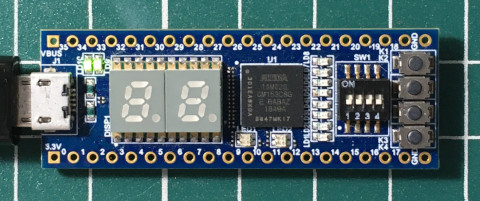
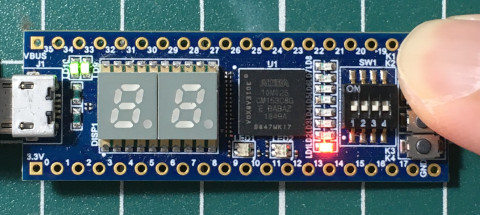

https://www.stepfpga.com/doc/step-max10
新專案

儲存路徑

Next

Next

選擇10M02SCM153C8G、MGBA、153

新增完成

新增VHDL檔案


main.vhd
參考資訊：
https://www.stepfpga.com/doc/step-max10
新專案
儲存路徑
Next
Next
選擇10M02SCM153C8G、MGBA、153
新增完成
新增VHDL檔案
main.vhd
library ieee;
use ieee.std_logic_1164.all;
entity main is
port(
btn: in bit;
led: out bit);
end main;
architecture logic of main is
begin
led<= btn;
end logic;
相較於Verilog語言，VHDL會比較嚴謹且語法比較偏向Pascal語言，上例就是把Button輸入當做LED輸出
儲存

Synthesis


指定Pin腳位


編譯


Programmer

Hardware Setup...

Currently selected hardware

按下Start燒錄

P.S. *.sof檔案是存於RAM，而*.pof則是燒到flash，因此，如要開機後還可以執行，則需要使用*.pof檔案燒錄
完成

